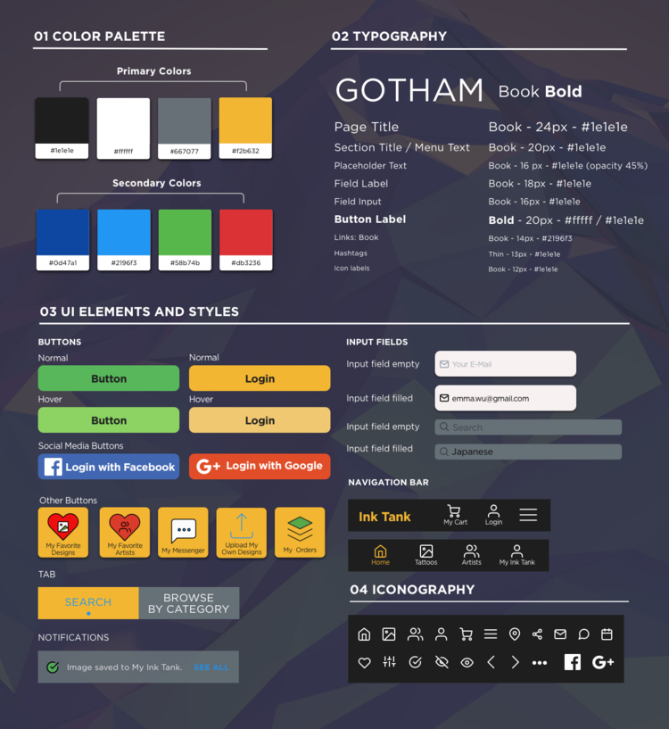

Ink Tank - Tattoo Platform
Project Overview
Ink tank is a web app that offers tattoo novice and tattoo enthusiasts a digital platform where they can find an abundance of tattoo inspirations, trusted tattoo artists in their areas, and share ideas within their social circles. Users can also minimize their chance of regretting their tattoo decision by trying temporary tattoos, which they can directly order from the platform. My core responsibilities in creating this product include research, design and testing the core features of this app.
Design Approach
Following the vital stages of Design Thinking, I started by understanding business needs and user goals and created product's core features to build the app's information architecture. Moving forward, I drafted wireframes to rapidly test my ideas and made quick iterations. As the product matures, I then created high-fidelity wireframes to test my design with potential users. The iterated screens were polished and made ready to export for developers.
01 COMPETITIVE ANALYSIS
I performed a comprehensive analysis of 3 competitor products that mapped out their objectives, strategies, market advantages, as well as their strengths and weaknesses (SWOT analysis). This helped me to understand market standards, avoid common user problems and identify new opportunities for innovation.
02 USER RESEARCH
I conducted 4 live interviews in order to fully understand user behavior, needs and motivations. Furthermore, it also helped me to (in)validate the core features of the product indicated in the Minimum Viable Product (MVP). I used affinity mapping as a brainstorming tool to codify ideas, hypotheses, and predictions. It also allowed me to identify themes, patterns from the interviews to create actionable steps to address pain points, concerns and needs of users.

03 USER PERSONAS
Based off of key insights received from the user interviews, I created 3 user personas which highlighted demographics, behaviors, needs and motivations of my target audience. User personas made it easier for me to empathize with the users throughout the entire design process.


04 USER JOURNEY MAP & USER FLOW
I created user journey maps to visualize the steps taken by the users as they engage with platform. This allows the capture of user's motivations and needs in each step of the journey, creates useful solutions that are appropriate for each. As the next step, I carefully designed user flows to identify each step towards a user goal, thus ensuring personas' every need has been satisfied at every point of the user flow.


05 INFORMATION ARCHITECTURE: CARD SORTING ACTIVITY
In this exercise, I asked 3 participants to organize different content topics into categories that made the most sense to them. My aim is to find out patterns that give my users clues on the most logical way of organizing content for this web app. This will ensure my users can intuitively find the information they need on the platform.

06 INFORMATION ARCHITECTURE: SITE MAP
With a site map, I can visualize an organizational map that outlines the navigation of my platform. It also gives me the chance to reflect on the hierarchy of content and eliminate any unncessary pages.
07 LOW FIDELITY & HIGH-FIDELITY WIREFRAMES
With valuable insights from the discovery stage, I started to sketch out the layout of the app with pen and paper. These paper prototypes are especially useful in communicating initial design ideas with the team or with users and get early user feedback.

Paper Prototype Testing
In order to be time efficient and discover as many errors and navigational issues early on, I conducted paper prototype testings (on mobile and desktop screens) with potential users to get immediate feedback for further iterations.

After several rounds of testing, I iterated and
08 USABILITY TESTING
With the iterated gray-scaled high-fidelity wireframes, I conducted 6 live mobile usability tests by using the Invision app. The overall goal of the test was to examine the core features and functionalities of the app. The advantage of testing at this stage provides opportunity to spot possible issues before development. In addition, it allows me the chance to further strengthen the core features based on user feedback.

The rainbow spreadsheet helped me to organize findings and create visual pattern, making it easier to extract valuable user information.
Summary of Top 5 User Issues & Errors
09 ITERATIONS & SOLUTIONS

Evidence & Solution:
Upon saving a design, users noticed the darkened heart, however the copy written below was overlooked by 2 participants. There was also no indication of where the design was saved to - leaving the users guessing where it might be. It is important to display confirmation after an interaction (after an action is completed), therefore a toast message would notify the users whether their interaction was successful or not. Icons help convey the message faster, so a check mark (tick) helps to convey that the task is successfully done.

Evidence & Solution:
The tasks during testing did not involve users doing any sharing of designs. However, 33% of the participants were wondering what the "share" icon meant. It showed that the icon was not familiar to certain users. Labelling the icons is a simple solution as it provides clarity to what the icons really mean. In addition, I changed the icon to a more universally recognized one.
Evidence & Solution:
2 Participants could not understand what the pictogram meant on page 3 of onboarding. As the pictogram was a little abstract, a real life picture has replaced the pictogram to demonstrate the idea of temporary tattoos. This has also been proven to be more preferable by a preference test.

Evidence & Solution:
All participants clicked on the search bar first when asked to search for a Japanese tattoo. While some eventually used the filter function, it showed that the flow of the search was flawed. By relocating the filter feature to the results page will prompt users to use the search bar first and then use the filter feature on the results page. This is a more natural flow of a search process.
TEST CONCLUSION:
It was rewarding to see that my users enjoyed the overall experience of the app. Nevertheless, the test also revealed some issues that I did not anticipate and they needed to be addressed. I believe the updates I've made to the design based on the user feedback and test findings have helped to make the product easier to use. The seamless flows between tasks will allow elevated user experience within the app.
10 STYLE GUIDE & PATTERN LIBRARY
11 POLISHED DESIGN


12 PRODUCT MOCK UPS

ONBOARDING

ARTIST PROFILE
BROWSE TATTOO

MY INK TANK
LOGIN & SIGN UP